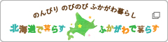

防災・防犯・緊急トップ
当番医
防災・防犯
消防・救急
暮らし・手続きトップ
戸籍・住民票・印鑑
助成・手当
ふるさと納税
税金
引越し・住まい
市民協働・コミュニティ
年金
水道・環境・ごみ
各種相談
生活支援
移住・定住
子育て・教育トップ
出産・子育て
学校・教育
健康
医療
健康・福祉トップ
観光・文化・スポーツトップ
観光
文化・スポーツ・生涯学習
公共施設
産業・ビジネストップ
農林業
入札・指定管理者
事業者向各種計画・届出
商工業
市政情報トップ
市長室
広報・広聴
深川市の概要
姉妹都市・国際交流
市政情報
ホーム
>暮らし・手続き
ページ内目次
戸籍の届
住民異動の届
印鑑登録
いろいろな証明
住基ネット
その他
市道民税
法人市民税
固定資産税
軽自動車税
国民健康保険税
その他の市税
税制改正
納税
市税の証明
その他税情報
国民年金
農業者年金
年金の制度
生活保護
支援
ひとり親・母子
相談
子育て・教育
健康・医療
生活・暮らし・環境
高齢の方・障害のある方
除雪・道路
お仕事・お住まい
まちづくり・市民活動
文化・スポーツ
事業者の皆さんへ
引越・住まい
市内転居
転出
市営住宅
住まいの知識
空き家情報
除排雪
道路・河川
公共交通
水道
下水道
くみ取り
ごみとリサイクル
環境
ペット
お墓
広聴・行政相談
団体・地域活動
市民協働
農業交流
行政について
税と年金
女性・母子
子ども
心とからだ
その他相談
就職・退職
注目情報
2024年1月16日
ピックアップ
令和６年能登半島地震災害義援金受付について
2024年2月7日
募集
深川市職員(言語聴覚士)募集
2024年2月5日
お知らせ
会計年度任用職員募集(学習指導専門員)
2024年2月2日
子育て支援アプリ「ふかすくナビ」をリリースしました！
2024年2月1日
粗大ごみ収集の電子申込みを試験的に実施します
おすすめ情報
企業立地のご案内
これぞ！ふかがわ名物
深川市について
ようこそ市長室へ
深川市のあらまし
お役立ち情報
深川市の条例や規則(別サイト)
パブリックコメント
職員採用情報
市議会会議録検索(別サイト)
市立図書館蔵書検索(別サイト)
電子申請(外部サイト)
市内学校(小・中学校、高校、大学など)
